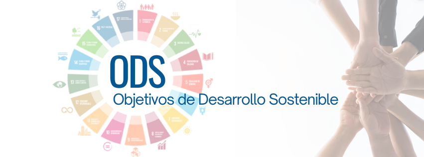

Tal y como su nombre lo dice, los ODS son metas e indicadores universales que todos los miembros de la ONU deberían conseguir. Para ello, estos fueron agrupados en un documento general que es más conocido como la Agenda 2030. Muy poco se sabe acerca de sus orígenes, y es que, hasta hace muy poco, eran conocidos como los ODM, ochos objetivos de desarrollo internacional que los 192 miembros de las Naciones Unidas y una serie de organizaciones internacionales acordaron alcanzar para el año 2015 con el objetivo principal de erradicar la pobreza. Evidentemente, no todos los miembros del equipo fueron capaces de lograr tal meta. A pesar de ello, se espera que, a través de los ODS se tenga más claro el panorama a través del cual se logren cada uno de los objetivos. Los Objetivos de Desarrollo Sostenible (ODS) son 17 objetivos que surgen a raíz de la Cumbre de las Naciones Unidas sobre el Desarrollo Sostenible, celebrada del 25 al 27 de septiembre de 2015 en Nueva York. Como producto de esta cumbre, la Asamblea General de las Naciones Unidas aprobó los objetivos en un documento de cuarenta páginas titulado “transformar nuestro mundo: la Agenda 2030 para el Desarrollo Sostenible”, más conocido como Agenda 2030. Y es que, los desafíos mundiales como el aumento de las desigualdades entre y al interior de las naciones, el empeoramiento de la pobreza, el hambre, las enfermedades y el deterioro continuo de ecosistemas de los que depende el bienestar humano requerían de la atención de todas las naciones.
